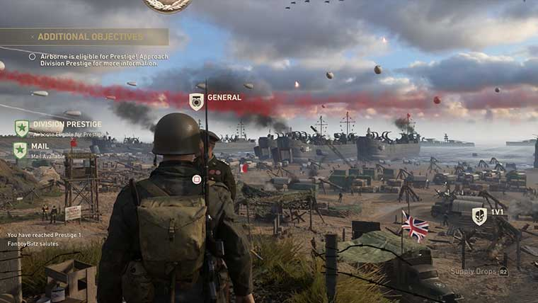
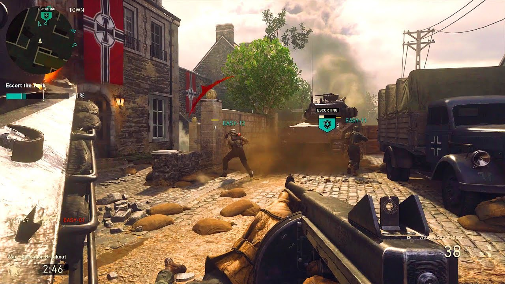
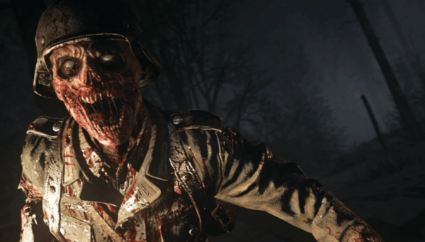
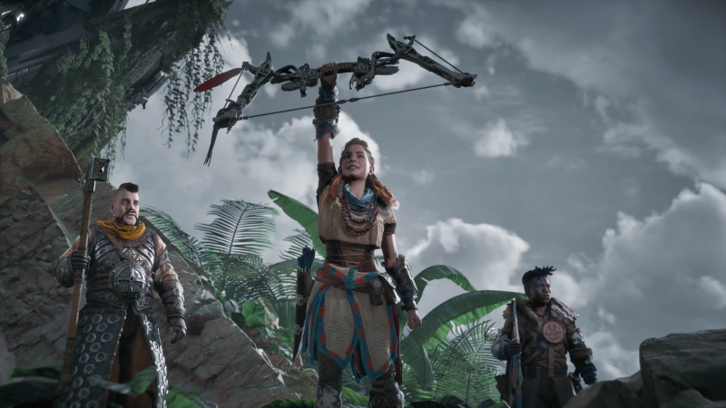
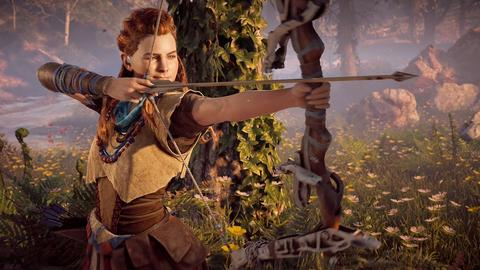
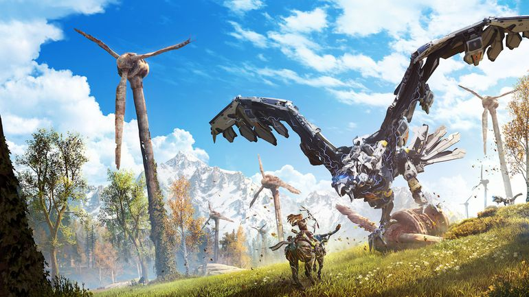
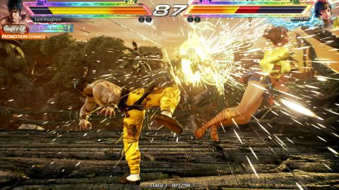
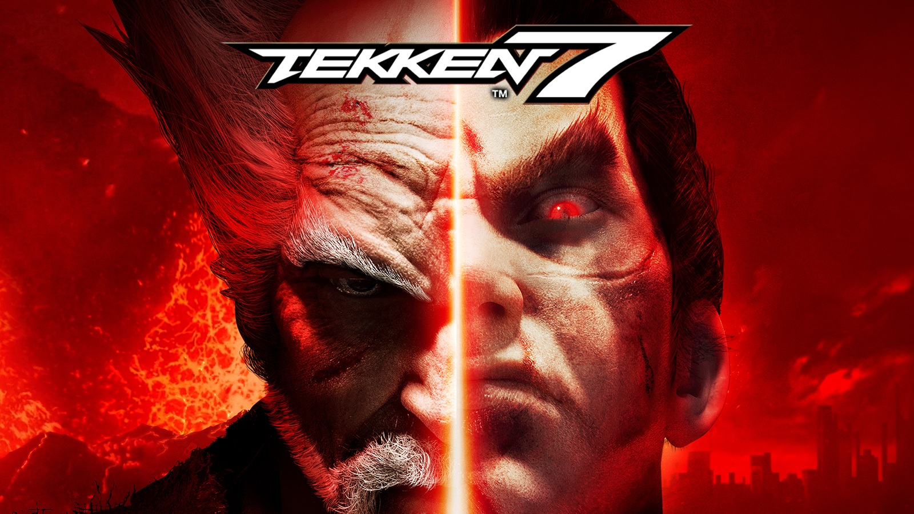
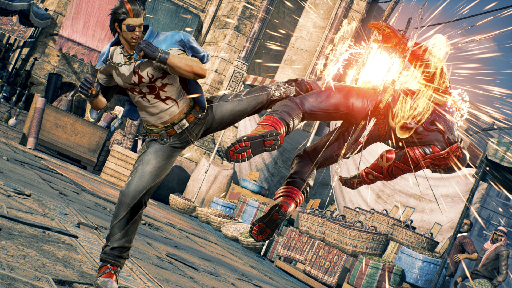

How does the latest entry of COD stack? Let's find out.
An explosive, surprising return to its roots. Never knowingly understated, Call of Duty is not a series renowned for its restraint.
Indeed, an introductory reminder that World War II was the deadliest conflict in human history alongside the final death tally is presented with the sober calm of a Sky Sports promo.



Explore headquarters, before battling in War and slay some Zombies! Braaaaaains!
Horizon: Zero Dawn
An open world RPG set in a post apocalyptic world controlled by animal-like robots.
Guerilla Games has created the most beautiful console game ever, one that is only more stunning on the PS4 Pro with 4K and HDR.
For anyone with a PS4 console, though, this is an absolutely essential purchase.



You are Alloy, a banished child, but you are the only who can win this war.
Tekken 7
The King of Iron First tournament returns.
In 1994, Namco released Tekken, an outstanding 3D fighting game with a loose story based on the struggle between a father and his powerful son.
In 2017 Bandai Namco gives us Tekken 7, an outstanding 3D fighting game with a loose story based on the struggle between a father and his powerful son.



Pick your favourite fighter, unleash rage art moves and prove you are the best.